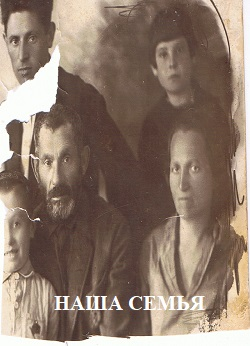

 Улица, на которой мы жили тогда еще не называлась Чудновской.… На этой улочке было маленькие лавочки продуктовые, мясные. Хозяевами этих лавочек были наши соседи. Иногда продукты брали в долг кусок мяса полфунта, сахар…
По нашей улице ходил трамвай от начала площади по улице Чудновской. Кондуктором трамвая был сосед жил напротив нас - Фишель, который нам иногда разрешал прокатиться на этом трамвае. Я дружил с его сыном Мотей Кремер, который через много лет стал директором самого крупного завода в Днепропетровске и был расстрелян в 1938 году и никто не знает за что.
Все наши детские игры проходили на берегу нашей реки Каменки. Помню, что учился в хедере у дедушки Абы, а когда стал старше учился, в общественной школе (Талмуд-Тора), где работал как ребе мой второй дедушка отец моей мамы – красавец с белой длиной бородой. Директором школы был очень красивый, широко развитый, умный человек, который читал природоведение – предмет который я особенно любил. Этот предмет меня ввел в жизнь, я постепенно узнавал смысл жизни, что человечество создало за многие поколения, быт и стремления людей. За то, что директор дал нам эти интересные знания его в 1917 году, после революции забрали, и мы его больше не видели.